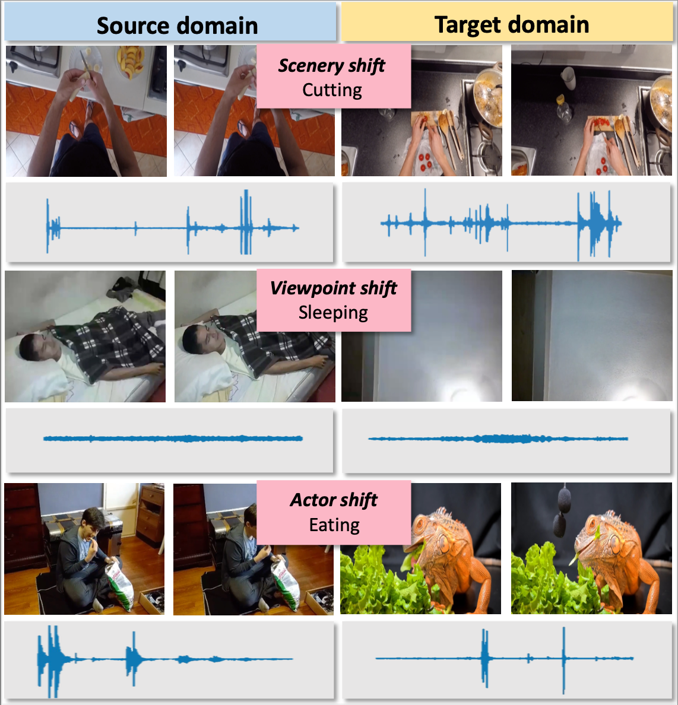
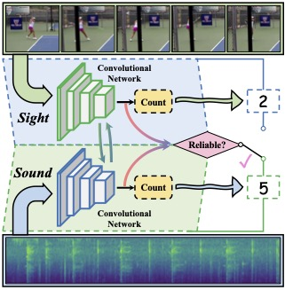
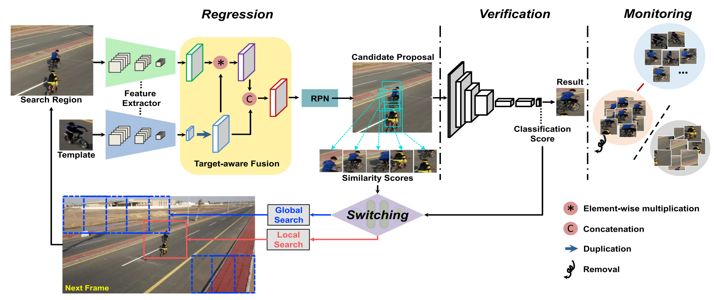
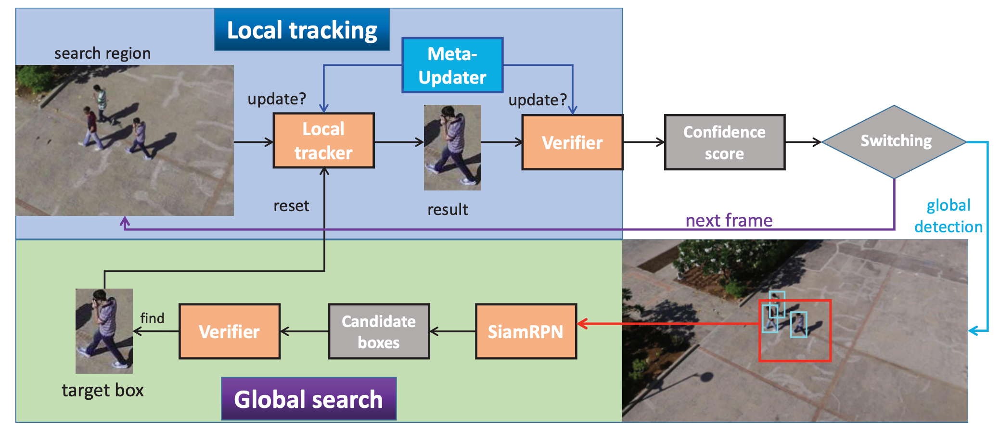
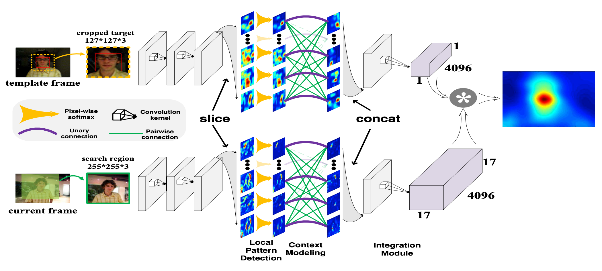
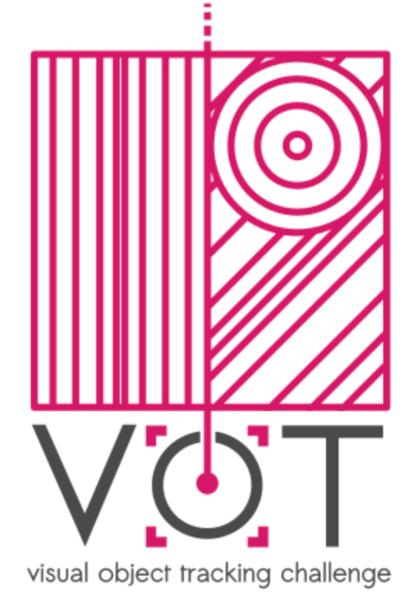

|
Research
I'm interested in computer vision, video understanding, audiovisual learning and object tracking.
|
|

|
Audio-Adaptive Activity Recognition Across Video Domains
Yunhua Zhang, Hazel Doughty, Ling Shao, Cees G.M. Snoek
CVPR, 2022
bibtex / arXiv / code & data / website / demo video / CVPR presentation
2nd place in the UDA track, EPIC-Kitchens Challenge @CVPR 2022.
This paper strives for activity recognition under domain shift, for example caused by change of scenery or camera viewpoint. Different from vision-focused works we leverage activity sounds for domain adaptation as they have less variance across domains and can reliably indicate which activities are not happening.
|
|

|
Repetitive Activity Counting by Sight and Sound
Yunhua Zhang, Ling Shao, Cees G.M. Snoek
CVPR, 2021
bibtex / arXiv / demo video / CVPR presentation / code & data
Also presented at EPIC Workshop@CVPR 2021 and Sight and Sound Workshop@CVPR 2021
We incorporate for the first time the corresponding sound into the repetition counting process. This benefits accuracy in challenging vision conditions such as occlusion, dramatic camera view changes, low resolution, etc.
|
|

|
Learning Regression and Verification Networks for Robust Long-term
Tracking
Yunhua Zhang, Lijun Wang, Dong Wang, Jinqing Qi, Huchuan Lu
IJCV, 2021
bibtex / PDF / code
This paper proposes a new visual tracking algorithm, which leverages the merits of both template matching approaches and classification models for long-term object detection and tracking.
|
|

|
High-Performance Long-Term Tracking with Meta-Updater
Kenan Dai, Yunhua Zhang, Dong Wang, Jianhua Li, Huchuan Lu, Xiaoyun Yang
CVPR, 2020 (Best Paper Award Nominee)
bibtex / PDF / code
In this work, we propose a novel offline-trained Meta-Updater to address an important but unsolved problem: Is the tracker ready for updating in the current frame?
|
|

|
Structured Siamese Network for Real-Time Visual Tracking
Yunhua Zhang, Lijun Wang, Jinqing Qi, Dong Wang, Mengyang Feng, Huchuan Lu
ECCV, 2018
bibtex / PDF
In this paper, we propose a local structure learning method, which simultaneously considers the local patterns of the target and their structural relationships for more accurate target tracking.
|
|  |
The winning track of VOT2019 Long-term Tracking Challenge
Kenan Dai, Yunhua Zhang, Jianhua Li, Dong Wang, Xiaoyun Yang, Huchuan Lu
ICCV Workshop, 2019
Report / Code
The winning track of VOT2018 Long-term Tracking Challenge
Yunhua Zhang, Lijun Wang, Dong Wang, JinQing Qi, Huchuan Lu
ECCV Workshop, 2018
Report / Code
|
This website uses the template provided by Jon Barron.
|
|
{kind=link}